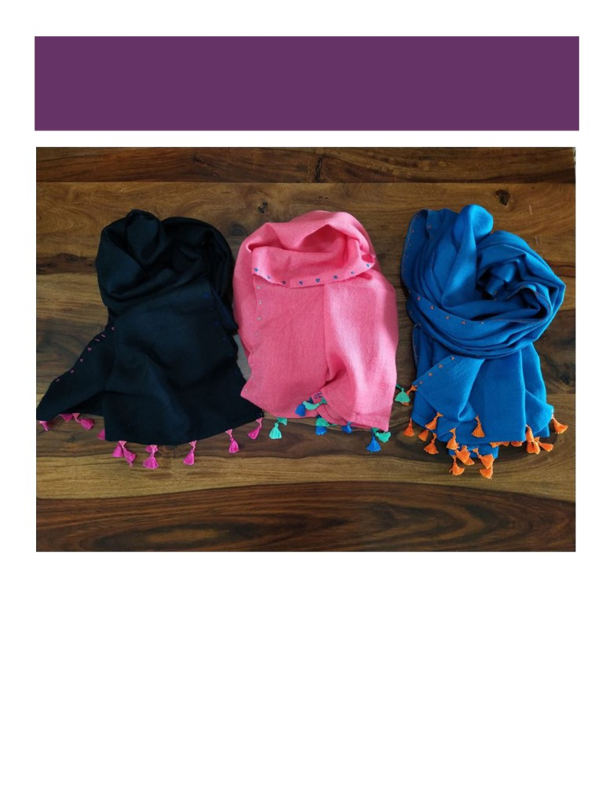

The HOB
Handmade
Handwoven
Handcrafted
Product Catalogue
+91 96203 71851
Plain Solids
Handwoven. Pure merino wool. Very soft all-natural feel. Multiple colour options.
Stoles and Shawls
Wash care: Dry clean or gentle hand wash only.
Autumn, Indigo, Multi Check Stole
Beautiful multicolored checks. Handwoven in pure merino wool. Trendy and stylish.
Wash care: Dry clean or gentle hand wash only.
Pattern Weave Stoles
Pure merino wool, handwoven in beautiful patterns. Very soft and light.
Wash care: Dry clean or gentle hand wash only.
Zari Collection Stoles
Pure tested zari. Handwoven in merino wool. Soft and light.
Wash care: Dry clean or gentle hand wash only.
Buta Collection Stoles
Hand block printed. Pure merino wool with khadi cotton blend.
Smooth natural feel. New look stole for your wardrobe.
Wash care: Dry clean or gentle hand wash only.

Tassel Bead Stoles
Hand embroidery and bead work. Beautiful triangle border with thread.
Handwoven in pure merino wool.
Also available in plain solids (w/o hand embroidery and bead work)
Wash care: Dry clean or gentle hand wash only.
Dabu Collection Stoles
Hand block printed using mud resist technique.
Pure merino wool with khadi cotton blend.
All-natural dye. Smooth natural feel.
Wash care: Dry clean or gentle hand wash only.
Kangeri Stoles
Different Border on both sides. Aplic work, all-natural dye.
Beautiful colour combinations.
Wash care: Dry clean or gentle hand wash only.
Indigo Collection Stoles
Stylish stoles to go with your denims. Hand block printed using mud resist technique.
Pure merino wool with khadi cotton blend. All-natural dye. Smooth natural feel.
Wash care: Dry clean or gentle hand wash only.
Purple Natural Stole
Handwoven. All-natural dye.
Angora wool mixed with merino wool for extra softness.
Wash care: Dry clean or gentle hand wash only.
Crochet / Beads Work Shawls
Very soft handwoven shawl. Beautiful handmade crochet / beads border. Very light.
Wash care: Dry clean or gentle hand wash only.